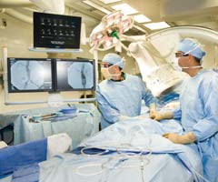

Facilities & Technology
Albany Medical Center has invested substantially in cardiac & vascular treatment facilities and medical technologies:
|
Cath labs give unprecedented |
| The latest digital equipment in Albany Med’s three cath labs gives physicians the ultimate view of the heart, both for diagnosing heart function and for clearing arterial blockages. The labs were the first in the region to offer drug-eluting stents that not only reduce restenosis in patients down to as low as 3-7%, but also decrease the need for open-heart surgeries. The labs also provide the region’s only pediatric catheterization program. Cath lab teams can be mobilized within 30 minutes to treat patients in emergency situations. Albany Medical Center: Precision in Cardiac & Vascular Care. |
The fully accredited and fully digital Echocardiography Laboratory at Albany Med provides echocardiographic evaluations, including transthoracic studies, exercise echocardiograms, dobutamine stress echocardiograms, myocardial perfusion imaging and tilt table tests.The lab also performs transesophageal echocardiograms (TEE) to evaluate patients after transient ischemic attacks and stroke. All non-invasive diagnostic tests are conducted by physicians and technicians with finely honed interpretive and technical skills.The program’s technicians are certified by the Registry of Diagnostic Medical Sonographers.
Keeping Up the Pace: Region’s Most Advanced Electrophysiology Lab
The
newly opened Electrophysiology Laboratory at Albany Med is the only
facility of its kind in the region. Using the very latest digital
equipment, including a 3-dimensional electrical mapping system,
experienced specialists record the hearts electrical activity and
diagnose and treat various arrhythmias and cardiac conditions. Unique
to Albany Med is a fellowship trained cardiologist who can perform
laser extractions of defibrillators and pacemakers.
Biplane Angiography Provides Two Views for Surgeons
Albany
Med’s bi-plane angiography equipment features two separate X-ray tubes
positioned at 90-degree angles that project sharp, high-resolution
3-dimensional images onto a series of screens, enabling physicians and
surgeons to see two views of blood vessels and aneurysms
simultaneously. The new equipment replaces the need for multiple
injections of X-ray dye, which reduces patients’ table time, X-ray dose
and contrast media exposure. The equipment’s high speed also
compensates for unavoidable patient movement.
Cardiac Patient Simulator: A Remarkable Teaching Tool
Albany
Med is home to one of the most ingenious teaching devices ever created:
the Cardiac Patient Simulator. From aortic valve sclerosis and
hypertension to mitral stenosis and acute pericarditis, the full-sized
computerized manikin realistically simulates 27 cardiovascular
conditions, and assists physicians, nurses and medical students in
studying a variety of cardiac conditions and to practice their
techniques in conducting examinations.
|  |
|
Combined OR / Endovascular suite |
| Albany Med’s modern combined operative/endovascular suite is one of only several such advanced facilities in the entire nation. Complete with digital fluoroscopic imaging equipment that creates three-dimensional pictures of blood vessels and arteries, the state-of-the-art facility allows surgeons to perform advanced minimally invasive procedures as well as traditional surgeries. Complex “hybrid” open and endovascular procedures, as in the case of bypass and stenting procedures, can now be performed simultaneously by a team of vascular surgeons and interventionalists. |
Biomedical research scientists at Albany Med are leading significant NIH-funded studies in the area of heart care. We offer patients with complex and advanced heart disease new hope through a range of experimental therapies in clinical trials. These trials are ideal for cardiovascular patients who, for a variety of reasons, choose to move beyond traditional treatment modalities. Our clinical protocols have been approved by a Human Subjects Committee and involve little or no expense to patients.
Physician Pavilion Provides Easy Access to Care
Brand
new to Albany Med is the recently opened Physicians Pavilion, which
houses all outpatient activity and related hospital services in a
single location. As a result, physicians who participate in
multidisciplinary care are within a central location that facilitates
collaboration and improves patient care. Also located in the Pavilion
are labs for non-invasive cardiology and vascular testing, pulmonary
function testing and endoscopy. For the convenience and comfort of
patients and their families, we offer free valet parking and
streamlined registration at the new facility.
Surgical Intensive Care Unit Renowned for Quality of Care
The
national award-winning members of Albany Med’s 17-bed Surgical
Intensive Care Unit, as well as the staff of the Cardiac Pulmonary
Surgery (CPS) and step down units, provide skilled and compassionate
care to critically ill patients following surgery. The
multidisciplinary team consists of doctors, critical care nurses, a
respiratory therapist, social worker, technician, dietician, and
pharmacist or clinical pharmacologist, occupational and physical
therapists. Together they serve the full range of needs of each patient
during recovery and provide support for their families.
IT Transforms Quality Care
A huge commitment to
advance patient safety and quality of care through information
technology systems has not only achieved greater efficiencies and
standardization at Albany Med, it has also earned the us national
recognition as “Most Improved” in information technology by Hospitals
and Health Networks Magazine. To date, IT upgrades include Picture
Archiving Communication System technology; Soarian Clinical Access by
Siemens; Bedside Medication Administration barcode technology and
Citrix Remote Access, allowing instant wireless remote access for
doctors. In addition, broad-band internet connections between Albany
Med and selected outlying hospitals create tele-medicine links between
our staff and referring physicians for immediate consultation on a
patient’s condition at any time of day.